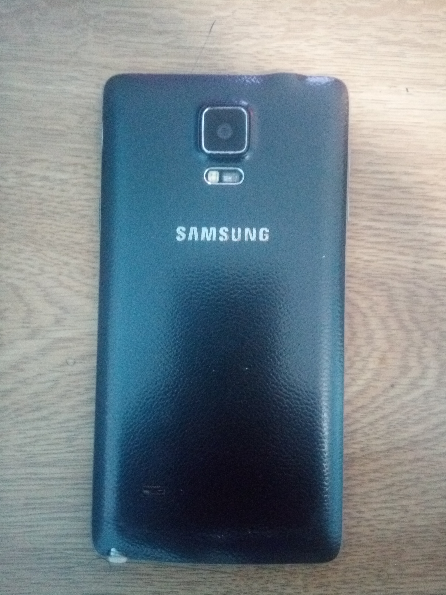

How a Note 4 Runs in 2021
October 1, 2021 by Odane Williams
By today's standards the Note 4's performance is mediocre at best, but it will get you through your day. It still takes decent photos and there is the S-pen for convenience. It also still has features that still aren't in many phones to date like the IR Blaster at the top and the heartrate monitor. Also, in a time where the headphone jacks are starting to be removed from smartphones, it being present is now a bonus. I can say that the Note 4 may not be suitable in this time but, with patience, is quite usable.